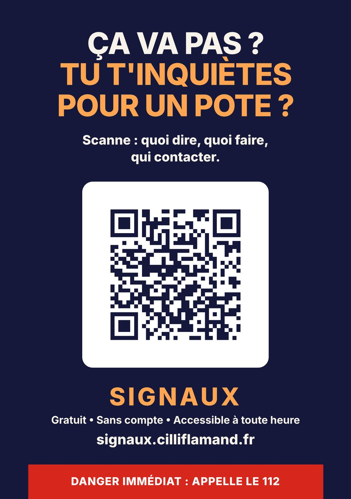

Colloque international Villes et Santé mentale · Nice 2026
Cilli Flamand
Psychologue clinicienne · violences psychologiques et contrôle coercitif
Aider les jeunes à reconnaître plus tôt une relation qui isole, et à trouver vers qui se tourner.
Le projet
SIGNAUX est un outil numérique pour les jeunes qui s'inquiètent pour un ami, ou pour eux-mêmes. Il donne des repères, des mots pour ouvrir la conversation, et il oriente vers une aide humaine.
Trois volets
- L'outil, pour les jeunesGratuit, sans compte. Une entrée pour soi, une pour un ami, une pour les parents et les proches.
- RELAIS, pour les adultesPréparer les adultes de proximité à recevoir une parole préoccupante et à savoir vers qui orienter.
- Les ateliersJeux de rôle et théâtre-forum : s'entraîner à répondre à un ami et à passer le relais.
La prochaine étape
Un pilote de six mois à Nice, avec deux structures volontaires, des jeunes, les équipes de terrain et un partenaire scientifique.
SIGNAUX est un prototype, non évalué à ce jour. Il ne pose pas de diagnostic et ne remplace pas une aide humaine.
La recherche
Je prépare un projet de thèse en psychologie clinique sur la reconnaissance précoce du contrôle coercitif chez les 18‑25 ans : ce qui la rend difficile, entre des contenus en ligne qui envoient des messages opposés, et le rôle des amis dans le repérage. SIGNAUX en est le terrain.

L'affiche du projet. Touchez-la pour ouvrir SIGNAUX.